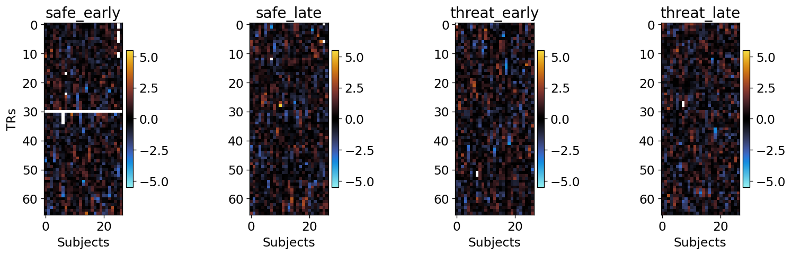

July 20, 22: Plot trial level response time series
Contents
July 20, 22: Plot trial level response time series¶
individually for each trial for each subject.
import os
import sys
from os.path import join as pjoin
import numpy as np
import pandas as pd
import pickle, random
from tqdm import tqdm
from scipy.stats import (norm, zscore, permutation_test)
from brainiak.isc import (
isc, isfc, bootstrap_isc, compute_summary_statistic, squareform_isfc,
_check_timeseries_input, _check_targets_input, _threshold_nans
)
from brainiak.fcma.util import compute_correlation
# plotting
import matplotlib.pyplot as plt
plt.rcParamsDefault['font.family'] = "sans-serif"
plt.rcParamsDefault['font.sans-serif'] = "Arial"
plt.rcParams['font.size'] = 14
plt.rcParams["errorbar.capsize"] = 0.5
import cmasher as cmr #CITE ITS PAPER IN YOUR MANUSCRIPT
# main dirs
proj_dir = pjoin(os.environ['HOME'], 'network_dynamics')
results_dir = f"{proj_dir}/results"
month_dir = f"{proj_dir}/nb/jul22"
# folders
sys.path.insert(0, proj_dir)
import helpers.dataset_utils as dataset_utils
'''
exploratory data
'''
class ARGS(): pass
args = ARGS()
args.SEED = 74
args.LABELS = [0, 1]
args.NAMES = ['safe', 'threat']
args.MASK = -100
args.provide_roi_idxs = True
if args.provide_roi_idxs:
with open(f"{proj_dir}/data/max/exploratory_data_roi_indices.pkl", 'rb') as f:
args.up_roi_idxs, args.down_roi_idxs, args.roi_idxs = pickle.load(f)
args.num_rois = len(args.roi_idxs)
else:
args.num_rois = 85
args.roi_idxs = np.arange(args.num_rois)
with open(f"{proj_dir}/data/max/exploratory_data_trial_level_responses.pkl", 'rb') as f:
X = pickle.load(f)
'''
change roi ordering
'''
for label in args.LABELS:
for idx_subj in range(len(X[label])):
X[label][idx_subj] = X[label][idx_subj][:, :, args.roi_idxs]
'''
find minimum number of trials across subjects
'''
min_trials = []
for label in args.LABELS:
min_trials += [x.shape[0] for x in X[label]]
min_trials = min(min_trials)
print(f"minimum number of trials = {min_trials}")
minimum number of trials = 11
'''
time series of early and late periods
'''
args.PERIODS = ['early', 'late']
# time periods
args.TR = 1.25 #seconds
EARLY = np.arange(2.5, 8.75+args.TR, args.TR) // args.TR
LATE = np.arange(10.0, 16.25+args.TR, args.TR) // args.TR
EARLY = EARLY.astype(int)
LATE = LATE.astype(int)
args.PERIOD_TRS = [EARLY, LATE]
ts = {}
for label, name in zip(args.LABELS, args.NAMES):
for idx_period, (period, TRs) in enumerate(zip(args.PERIODS, args.PERIOD_TRS)):
ts[f"{name}_{period}"] = []
for x in X[label]:
x = x[:, args.PERIOD_TRS[idx_period], :]
trl, t, r = x.shape
x = np.reshape(x[:min_trials, ...], (min_trials*t, r))
ts[f"{name}_{period}"] += [zscore(x, axis=0, nan_policy='omit')]
# ts[f"{name}_{period}"] += [x]
# ts[f"{name}_{period}"].append(x)
nan_masks = {}; nan_any_masks = {}; nan_all_any_masks = {}
for block in ts.keys():
ts[block] = np.dstack(ts[block])
nan_masks[block] = np.isnan(ts[block])
nan_any_masks[block] = np.all(np.isnan(ts[block]), axis=0, keepdims=True) # np.any(...)
nan_all_any_masks[block] = np.all(np.all(np.isnan(ts[block]), axis=0, keepdims=True), axis=2) # np.all(np.any(...))
response time series plots¶
responses, and
nan masks
roi = 0 # fix an roi as a NaN value at a TR will percolate to all rois.
nrows, ncols = 1, 4
fig, axs = plt.subplots(
nrows=nrows,
ncols=ncols,
figsize=(4*ncols, 4*nrows),
sharex=False,
sharey=False,
dpi=120,
)
plt.subplots_adjust(
left=None, bottom=None,
right=None, top=None,
wspace=None, hspace=0.5
)
for idx_block, block in enumerate(ts.keys()):
ax = axs[idx_block]
im = ax.imshow(
ts[block][:, roi, :],
cmap=cmr.iceburn,
vmin=-5.5, vmax=5.5
)
ax.figure.colorbar(im, ax=ax, fraction=0.040, pad=0.02)
ax.set_xlabel(f"Subjects")
if idx_block == 0: ax.set_ylabel(f"TRs")
ax.set_title(f"{block}")

roi = 0 # fix an roi as a NaN value at a TR will percolate to all rois.
nrows, ncols = 1, 4
fig, axs = plt.subplots(
nrows=nrows,
ncols=ncols,
figsize=(4*ncols, 4*nrows),
sharex=False,
sharey=False,
dpi=120,
)
plt.subplots_adjust(
left=None, bottom=None,
right=None, top=None,
wspace=None, hspace=0.5
)
for idx_block, block in enumerate(nan_masks.keys()):
ax = axs[idx_block]
im = ax.imshow(
nan_masks[block][:, roi, :],
cmap=cmr.iceburn,
vmin=-1.0, vmax=1.0
)
ax.figure.colorbar(im, ax=ax, fraction=0.040, pad=0.02)
ax.set_xlabel(f"Subjects")
if idx_block == 0: ax.set_ylabel(f"TRs")
ax.set_title(f"{block}")

roi = 0 # fix an roi as a NaN value at a TR will percolate to all rois.
nrows, ncols = 1, 4
fig, axs = plt.subplots(
nrows=nrows,
ncols=ncols,
figsize=(4*ncols, 4*nrows),
sharex=False,
sharey=False,
dpi=120,
)
plt.subplots_adjust(
left=None, bottom=None,
right=None, top=None,
wspace=None, hspace=0.5
)
for idx_block, block in enumerate(nan_any_masks.keys()):
ax = axs[idx_block]
im = ax.imshow(
nan_any_masks[block][:, roi, :].T,
cmap=cmr.iceburn,
vmin=-1.0, vmax=1.0
)
ax.figure.colorbar(im, ax=ax, fraction=0.040, pad=0.04)
ax.set_xlabel(f"")
if idx_block == 0: ax.set_ylabel(f"Subjects")
ax.set_title(f"{block}")
nan_all_any_masks
{'safe_early': array([[False, False, False, False, False, False, False, False, False,
False, False, False, False, False, False, False, False, False,
False, False, False, False, False, False, False, False, False,
False, False, False, False, False, False, False, False, False,
False, False, False, False, False, False, False]]),
'safe_late': array([[False, False, False, False, False, False, False, False, False,
False, False, False, False, False, False, False, False, False,
False, False, False, False, False, False, False, False, False,
False, False, False, False, False, False, False, False, False,
False, False, False, False, False, False, False]]),
'threat_early': array([[False, False, False, False, False, False, False, False, False,
False, False, False, False, False, False, False, False, False,
False, False, False, False, False, False, False, False, False,
False, False, False, False, False, False, False, False, False,
False, False, False, False, False, False, False]]),
'threat_late': array([[False, False, False, False, False, False, False, False, False,
False, False, False, False, False, False, False, False, False,
False, False, False, False, False, False, False, False, False,
False, False, False, False, False, False, False, False, False,
False, False, False, False, False, False, False]])}
Seeing ISFC for subject 7 because this subject has nan in one TR, resulting in masking of the whole time series of the subject.
checking why brainiak’s functions return nan ISFCs¶
isfc¶
'''
compute ISFC
'''
mean = np.nanmean
block = 'safe_early'
data = ts[block]
targets = data
symmetric = True
data = np.rollaxis(data, 2, 0)
targets = np.rollaxis(targets, 2, 0)
isfcs = [compute_correlation(np.ascontiguousarray(subject.T),
np.ascontiguousarray(mean(
np.delete(targets, s, axis=0),
axis=0).T),
return_nans=True)
for s, subject in enumerate(data)]
isfcs = np.dstack([(isfc_matrix + isfc_matrix.T) / 2 if
symmetric else isfc_matrix for
isfc_matrix in isfcs])
display(isfcs[:, :, 7])
display(np.where(np.isnan(data[7])))
display(zscore(data[7], axis=0, ddof=0))
display(np.sum(np.isnan(np.corrcoef(data[7], data[8])[:43, 43:])))
/tmp/ipykernel_22719/1436769480.py:14: RuntimeWarning: Mean of empty slice
np.ascontiguousarray(mean(
array([[nan, nan, nan, ..., nan, nan, nan],
[nan, nan, nan, ..., nan, nan, nan],
[nan, nan, nan, ..., nan, nan, nan],
...,
[nan, nan, nan, ..., nan, nan, nan],
[nan, nan, nan, ..., nan, nan, nan],
[nan, nan, nan, ..., nan, nan, nan]], dtype=float32)
(array([17, 17, 17, 17, 17, 17, 17, 17, 17, 17, 17, 17, 17, 17, 17, 17, 17,
17, 17, 17, 17, 17, 17, 17, 17, 17, 17, 17, 17, 17, 17, 17, 17, 17,
17, 17, 17, 17, 17, 17, 17, 17, 17, 24, 24, 24, 24, 24, 24, 24, 24,
24, 24, 24, 24, 24, 24, 24, 24, 24, 24, 24, 24, 24, 24, 24, 24, 24,
24, 24, 24, 24, 24, 24, 24, 24, 24, 24, 24, 24, 24, 24, 24, 24, 24,
24, 30, 30, 30, 30, 30, 30, 30, 30, 30, 30, 30, 30, 30, 30, 30, 30,
30, 30, 30, 30, 30, 30, 30, 30, 30, 30, 30, 30, 30, 30, 30, 30, 30,
30, 30, 30, 30, 30, 30, 30, 30, 30, 30]),
array([ 0, 1, 2, 3, 4, 5, 6, 7, 8, 9, 10, 11, 12, 13, 14, 15, 16,
17, 18, 19, 20, 21, 22, 23, 24, 25, 26, 27, 28, 29, 30, 31, 32, 33,
34, 35, 36, 37, 38, 39, 40, 41, 42, 0, 1, 2, 3, 4, 5, 6, 7,
8, 9, 10, 11, 12, 13, 14, 15, 16, 17, 18, 19, 20, 21, 22, 23, 24,
25, 26, 27, 28, 29, 30, 31, 32, 33, 34, 35, 36, 37, 38, 39, 40, 41,
42, 0, 1, 2, 3, 4, 5, 6, 7, 8, 9, 10, 11, 12, 13, 14, 15,
16, 17, 18, 19, 20, 21, 22, 23, 24, 25, 26, 27, 28, 29, 30, 31, 32,
33, 34, 35, 36, 37, 38, 39, 40, 41, 42]))
array([[nan, nan, nan, ..., nan, nan, nan],
[nan, nan, nan, ..., nan, nan, nan],
[nan, nan, nan, ..., nan, nan, nan],
...,
[nan, nan, nan, ..., nan, nan, nan],
[nan, nan, nan, ..., nan, nan, nan],
[nan, nan, nan, ..., nan, nan, nan]], dtype=float32)
307
corrs = {}
for block in ts.keys():
isfcs, iscs = isfc(
ts[block],
pairwise=False,
summary_statistic=None,
vectorize_isfcs=True
)
corrs[block] = {'isfcs':isfcs, 'iscs':iscs}
# display(isfcs)
# display(np.sum(np.isnan(isfcs)))
# display(isfcs.shape)
# display(np.argwhere(np.isnan(isfcs)))
nrows, ncols = 4, 1
fig, axs = plt.subplots(
nrows=nrows,
ncols=ncols,
figsize=(40*ncols, 4*nrows),
sharex=False,
sharey=False,
dpi=120,
)
plt.subplots_adjust(
left=None, bottom=None,
right=None, top=None,
wspace=None, hspace=0.5
)
for idx_block, block in enumerate(corrs.keys()):
ax = axs[idx_block]
im = ax.imshow(
corrs[block]['isfcs'],
cmap=cmr.iceburn,
vmin=-0.2, vmax=0.2
)
ax.figure.colorbar(im, ax=ax, fraction=0.040, pad=0.04)
ax.set_xlabel(f"roi pairs")
if idx_block == 0: ax.set_ylabel(f"TRs")
ax.set_title(f"{block}")
block = 'safe_early'
corrs[block]['isfcs']
array([[nan, nan, nan, ..., nan, nan, nan],
[nan, nan, nan, ..., nan, nan, nan],
[nan, nan, nan, ..., nan, nan, nan],
...,
[nan, nan, nan, ..., nan, nan, nan],
[nan, nan, nan, ..., nan, nan, nan],
[nan, nan, nan, ..., nan, nan, nan]])
a = np.array([np.nan, np.nan])
b = np.array([np.nan, np.nan])
np.nanmean([a, b], axis=1)
/tmp/ipykernel_22719/1732644666.py:3: RuntimeWarning: Mean of empty slice
np.nanmean([a, b], axis=1)
array([nan, nan])
the problem with NaNs¶
It turns out that some TRs of some subjects are NaN values. When these subjects’ time series are passed through compute_correlation function, zscore function converts the time series into NaN time series resulting into NaN ISFC matrix for that subject.
solution(s):¶
1. Either use numpy’s corrcoef function,¶
'''
using `np.corrcoef` instead of cython's function
'''
a = np.array(
[
[1, 2, 3, 4, 5],
[6, 7, 8, 9, 10]
],
dtype=np.float32
).T
display(a)
b = np.array(
[
[5, 4, 3, 2, 1],
[1, 2, 3, 4, 5]
],
dtype=np.float32
).T
display(b)
c = np.corrcoef(
a,
b,
rowvar=False
)
display(c)
array([[ 1., 6.],
[ 2., 7.],
[ 3., 8.],
[ 4., 9.],
[ 5., 10.]], dtype=float32)
array([[5., 1.],
[4., 2.],
[3., 3.],
[2., 4.],
[1., 5.]], dtype=float32)
array([[ 1., 1., -1., 1.],
[ 1., 1., -1., 1.],
[-1., -1., 1., -1.],
[ 1., 1., -1., 1.]])
'''
or compute this way
'''
a_z = zscore(a, axis=0, ddof=0, nan_policy='omit') / np.sqrt(a.shape[0])
display(a_z)
b_z = zscore(b, axis=0, ddof=0, nan_policy='omit') / np.sqrt(b.shape[0])
display(b_z)
display(a_z.T, b_z)
c_z = a_z.T @ b_z
display(c_z)
array([[-0.6324555 , -0.6324555 ],
[-0.31622776, -0.31622776],
[ 0. , 0. ],
[ 0.31622776, 0.31622776],
[ 0.6324555 , 0.6324555 ]], dtype=float32)
array([[ 0.6324555 , -0.6324555 ],
[ 0.31622776, -0.31622776],
[ 0. , 0. ],
[-0.31622776, 0.31622776],
[-0.6324555 , 0.6324555 ]], dtype=float32)
array([[-0.6324555 , -0.31622776, 0. , 0.31622776, 0.6324555 ],
[-0.6324555 , -0.31622776, 0. , 0.31622776, 0.6324555 ]],
dtype=float32)
array([[ 0.6324555 , -0.6324555 ],
[ 0.31622776, -0.31622776],
[ 0. , 0. ],
[-0.31622776, 0.31622776],
[-0.6324555 , 0.6324555 ]], dtype=float32)
array([[-1., 1.],
[-1., 1.]], dtype=float32)
np.corrcoef with NaNs in the time series¶
a = np.array(
[
[1, 2, np.nan, 4, 5],
[6, 7, 8, 9, 10]
],
dtype=np.float32
).T
display(a)
b = np.array(
[
[5, 4, 3, 2, 1],
[1, np.nan, 3, 4, 5]
],
dtype=np.float32
).T
display(b)
c = np.corrcoef(
a,
b,
rowvar=False
)
display(c)
array([[ 1., 6.],
[ 2., 7.],
[nan, 8.],
[ 4., 9.],
[ 5., 10.]], dtype=float32)
array([[ 5., 1.],
[ 4., nan],
[ 3., 3.],
[ 2., 4.],
[ 1., 5.]], dtype=float32)
array([[nan, nan, nan, nan],
[nan, 1., -1., nan],
[nan, -1., 1., nan],
[nan, nan, nan, nan]])
a_z = zscore(a, axis=0, ddof=0, nan_policy='omit') / np.sqrt(a.shape[0])
display(a_z)
b_z = zscore(b, axis=0, ddof=0, nan_policy='omit') / np.sqrt(b.shape[0])
display(b_z)
display(a_z.T, b_z)
c_z = a_z.T @ b_z
display(c_z)
array([[-0.5656854 , -0.6324555 ],
[-0.2828427 , -0.31622776],
[ nan, 0. ],
[ 0.2828427 , 0.31622776],
[ 0.5656854 , 0.6324555 ]], dtype=float32)
array([[ 0.6324555 , -0.680336 ],
[ 0.31622776, nan],
[ 0. , -0.07559289],
[-0.31622776, 0.22677867],
[-0.6324555 , 0.5291502 ]], dtype=float32)
array([[-0.5656854 , -0.2828427 , nan, 0.2828427 , 0.5656854 ],
[-0.6324555 , -0.31622776, 0. , 0.31622776, 0.6324555 ]],
dtype=float32)
array([[ 0.6324555 , -0.680336 ],
[ 0.31622776, nan],
[ 0. , -0.07559289],
[-0.31622776, 0.22677867],
[-0.6324555 , 0.5291502 ]], dtype=float32)
array([[nan, nan],
[-1., nan]], dtype=float32)
standardize = lambda x: (x - np.nanmean(x, axis=0)) / (np.nanstd(x, axis=0) * np.sqrt(x.shape[0]))
a_s = standardize(a)
display(a_s)
b_s = standardize(b)
display(b_s)
array([[-0.56568545, -0.6324555 ],
[-0.28284273, -0.31622776],
[ nan, 0. ],
[ 0.28284273, 0.31622776],
[ 0.56568545, 0.6324555 ]], dtype=float32)
array([[ 0.6324555 , -0.68033606],
[ 0.31622776, nan],
[ 0. , -0.07559289],
[-0.31622776, 0.22677867],
[-0.6324555 , 0.52915025]], dtype=float32)
2. or remove the trials with maximum number of NaNs (BETTER TO GO FOR IT) (AND IT WORKS!!!! see ISFC matrices 😃)¶
# step 1. sort trials based on number of nan values present
for label in args.LABELS:
for idx in np.arange(len(X[label])):
x = X[label][idx]
num_nans_trial = np.squeeze(
np.apply_over_axes(
np.sum,
np.isnan(x),
axes=(1, 2)
)
)
num_nans_trial_idxs = np.argsort(num_nans_trial)
x = x[num_nans_trial_idxs, :, :]
X[label][idx] = x
# step 2. create time series
'''
find minimum number of trials across subjects
'''
min_trials = []
for label in args.LABELS:
min_trials += [x.shape[0] for x in X[label]]
min_trials = min(min_trials)
print(f"minimum number of trials = {min_trials}")
'''
time series of early and late periods
'''
args.PERIODS = ['early', 'late']
# time periods
args.TR = 1.25 #seconds
EARLY = np.arange(2.5, 8.75+args.TR, args.TR) // args.TR
LATE = np.arange(10.0, 16.25+args.TR, args.TR) // args.TR
EARLY = EARLY.astype(int)
LATE = LATE.astype(int)
args.PERIOD_TRS = [EARLY, LATE]
ts = {}
for label, name in zip(args.LABELS, args.NAMES):
for idx_period, (period, TRs) in enumerate(zip(args.PERIODS, args.PERIOD_TRS)):
ts[f"{name}_{period}"] = []
for x in X[label]:
x = x[:, args.PERIOD_TRS[idx_period], :]
trl, t, r = x.shape
x = np.reshape(x[:min_trials, ...], (min_trials*t, r))
ts[f"{name}_{period}"] += [zscore(x, axis=0, nan_policy='omit')]
for block in ts.keys():
ts[block] = np.dstack(ts[block])
minimum number of trials = 11
roi = 0 # fix an roi as a NaN value at a TR will percolate to all rois.
nrows, ncols = 1, 4
fig, axs = plt.subplots(
nrows=nrows,
ncols=ncols,
figsize=(4*ncols, 4*nrows),
sharex=False,
sharey=False,
dpi=120,
)
plt.subplots_adjust(
left=None, bottom=None,
right=None, top=None,
wspace=None, hspace=0.5
)
for idx_block, block in enumerate(ts.keys()):
ax = axs[idx_block]
im = ax.imshow(
ts[block][:, roi, :],
cmap=cmr.iceburn,
vmin=-5.5, vmax=5.5
)
ax.figure.colorbar(im, ax=ax, fraction=0.040, pad=0.02)
ax.set_xlabel(f"Subjects")
if idx_block == 0: ax.set_ylabel(f"TRs")
ax.set_title(f"{block}")